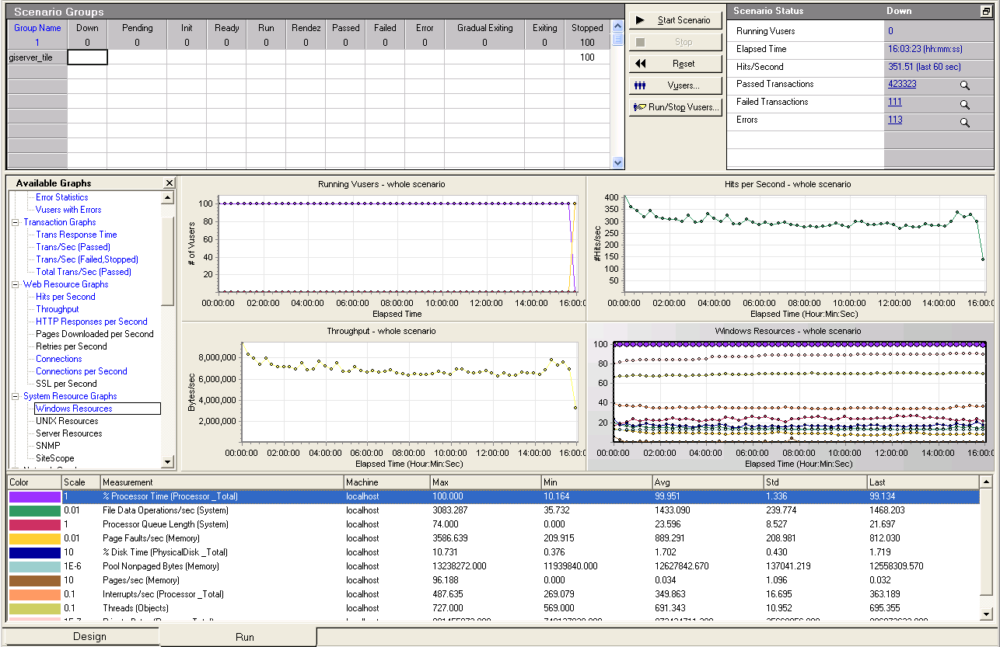

GIServer Documentations
Fatigue Load Test
Author: Wu Yongfeng
- GIServer test pooled services (like map service) and non-pooled services (like geometry service) under high load.
As the result, GIServer is able to keep stability under high fatigue load.
- This is a tiled map service, test for 16 hours under 100% CPU load:
- 